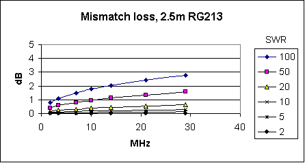
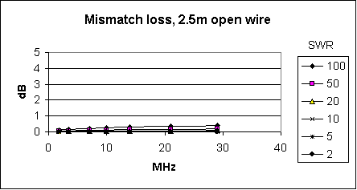

Feeding the Antenna
The less efficient the antenna and the lower the power you're using, the more vital it is that all that precious power reaches the antenna. You want the power your transmitter produces to warm up the ether, not the feeder. If you thought that the job of the antenna tuning unit (ATU) in your transceiver (or sitting right next to it) was to ensure that as much of the power as possible gets to the antenna, you could be in for a nasty surprise. It's a not-very-widely-known fact that best place for the antenna matching unit is at the antenna feedpoint, not at the transmitter.
In my "stealth" amateur radio station I originally used an SGC SG-239 autocoupler mounted in the attic at the feedpoint of my horizontal quad loop. Later, I switched to using the excellent KAT2 automatic antenna tuner in my K2 transceiver. Although this appears to flout the conventional wisdom that the antenna tuner should be at the feedpoint, I was surprised to find that it seemed to work even better. However, my radio room is directly below my attic antenna, so that the coaxial feeder can be extremely short. If it wasn't, I'd be wasting a lot more of my precious RF using this method of feeding the antenna. Here's why.
Feeder loss
Most people appreciate the need to use an antenna tuner at HF, so that their tranceiver transmits into a 50 ohm load and sees an SWR of close to 1:1. Most hams today have an antenna tuner sited right next to the transceiver, or even built into it. What is often not appreciated is that using an ATU at the transmitter doesn't solve the problems caused by a high SWR. It merely fools the transmitter into thinking that the antenna is matched to 50 ohms. Sure, this is pretty important for most solid-state finals, which don't like working into a high SWR, and which may even fail if there is a big mismatch. But whilst an ATU may help your PA keep its cool, it won't do a lot of good for your radiated signal.
Whatever mismatch exists at the antenna, whatever SWR is measured without the ATU in circuit, this mismatch still exists whether your ATU has "matched" the antenna or not. Transmitted power will still be reflected back from the antenna instead of being radiated from it.
If your antenna is designed to be nominally 50 ohms on the bands you operate on, if the SWR is, say, 3:1 or less, then it's true that the loss through mismatching will be fairly small. However, since most modern PA's aren't fazed by an SWR of 3:1 or less, there's really little point in using an ATU in this situation, apart from satisfying a need in the operator to see a 1:1 reading on the SWR meter! It will make little difference to the radiated signal (and you should bear in mind that losses of up to 10% can occur within an ATU itself.)
If you are using a non-resonant antenna, or a resonant one on bands other than the one it is designed for, much bigger mismatches (and higher SWRs) will be the norm. Take my attic loop for example: according to EZNEC the SWR should be 44:1 on 17 metres, 83:1 on 15 metres and even on 10 metres it's 6.5:1. Like most people in a restricted antenna situation, I have to work with the antenna I can put up, I can't change the antenna to reduce the mismatch on these bands.
So what's the problem? Well, take a look at the chart below.

As you can see from the graph, at high SWRs, substantial losses occur. Even using just 2.5m of "low loss" RG-213 cable, more than 2dB of loss would occur with the calculated 83:1 SWR on 15 metres - almost half the power! That is not good news, especially for a QRP operator. These losses will occur regardless of whether an ATU is used at the transceiver to "match" the antenna or not. To see the results for different feeder types and different lengths of feeder, see the Mismatch Losses spreadsheets.
To avoid feeder losses, the antenna tuner should be placed at the feedpoint of the antenna, not at the transmitter. That way, there will be a nice 50 ohms at both ends of the coaxial cable, and only normal feeder losses will occur. (Note: standard feeder losses are in addition to the mismatch losses shown in the tables!)
Open wire feeder
If it isn't convenient to put the antenna tuner at the feedpoint, one way to avoid it is to use open wire feeder. The losses that occur when you use open wire feeder are so low that you can safely ignore them, as the chart below (for the same length of feeder as the one above) demonstrates.

Using such a short length of feeder, mismatch losses are negligible even with a 100:1 SWR. Losses are low even with the longer lengths of feeder required to feed an outdoor antenna (see the Mismatch Losses spreadsheets.) That's why old hands always use open wire feeder.
However, there are several reasons why open wire feeder isn't the preferred transmission line of many amateurs. Number one, for me, is that open wire isn't particularly attractive, and not very easy to route between shack and antenna in an aesthetically satisfying manner. Coax can be hidden inside a plastic conduit to keep it out of sight, and it will happily pass through small holes in the ceiling or walls. If you want your radio room to look civilised enough to double as an office or guest bedroom, or if you are trying to achieve 100% Stealth, open wire is out of the question.
Another disadvantage of open wire, I believe, is that since it's almost impossible to achieve perfect balance over the two wires, you'll inevitably get some radiation, and pick-up, on the feeder itself. This means that you are more likely to get RFI if you use open wire, and you'll probably hear more interference from domestic appliances and the computers in the shack. My attic loop is surprisingly quiet for what is basically an indoor antenna, and I think that the fact that it is fed using a well-matched co-ax feeder has a lot to do with it.
Using a balun
There's another possible solution. It's the one I'm currently using, but whether it will work well for you will depend on how bad a mismatch your non-resonant antenna is on the bands of interest, and how short a coaxial feeder you can get away with. This solution is to place a 4:1 balun at the antenna feedpoint, and then use a coaxial feeder from there to the shack.
The balun won't eliminate the mismatch, but it can reduce it. In the case of my antenna, its calculated impedance on all of the bands I want to use is more than 100 ohms, quite a lot more in many cases. What the 4:1 balun does is reduce the mismatch. I will still incur some feeder loss, especially on the bands with the worst mismatch, but it will be a lot less than without the balun. Since I'm able to use a very short coaxial feeder, feeder losses are reduced to a minimum. The other thing the balun does is allow me to feed my balanced antenna (quad loop) with unbalanced feeder (coaxial cable) without getting TVI- and RFI-causing radiation from the shield of the feeder.
For me, the advantage of this solution is that it allows me to use the K2's fine KAT2 automatic tuner, which will automatically select the correct matching position for each band as I change bands. This is a big plus when I'm listening rather than transmitting. The SG-239 autocoupler had no idea what band the K2 was switched to until I transmitted some RF, so if I just wanted to listen around, I had to make do with a mismatched antenna.
Conclusion
From the on-air results it appears that my antenna actually works better, and signals are stronger, on 20m and up, now I'm using the balun, coaxial feeder and KAT2 antenna tuner. The SG-239 seemed to give stronger signals on 40m and 80m, and would even produce a good match on 160m. But a relatively small indoor antenna is of little use on the low bands, especially coupled with QRP power, so I was already more or less resigned to not being able to operate on those bands.
It's fine to feed a non-resonant antenna with coaxial cable and an auto-ATU if the mismatch isn't too severe and you can use a very short feeder and a balun. But the general rule, as the Mismatch Losses charts show clearly, is still that the correct place to match an antenna is at the feedpoint! If you can't do that, use open wire feeder, so the losses are low enough that you can ignore them. Or else, if the mismatch isn't too severe and the antenna-to-radio distance is short, try using a balun at the feedpoint and using an ATU in the shack.
(Acknowledgement: the Mismatch Losses tables and charts were created using a Microsoft Excel spreadsheet developed by Ian White, G3SEK, to illustrate an article on this topic that was published in the March 2002 issue of the RSGB journal RadCom.)